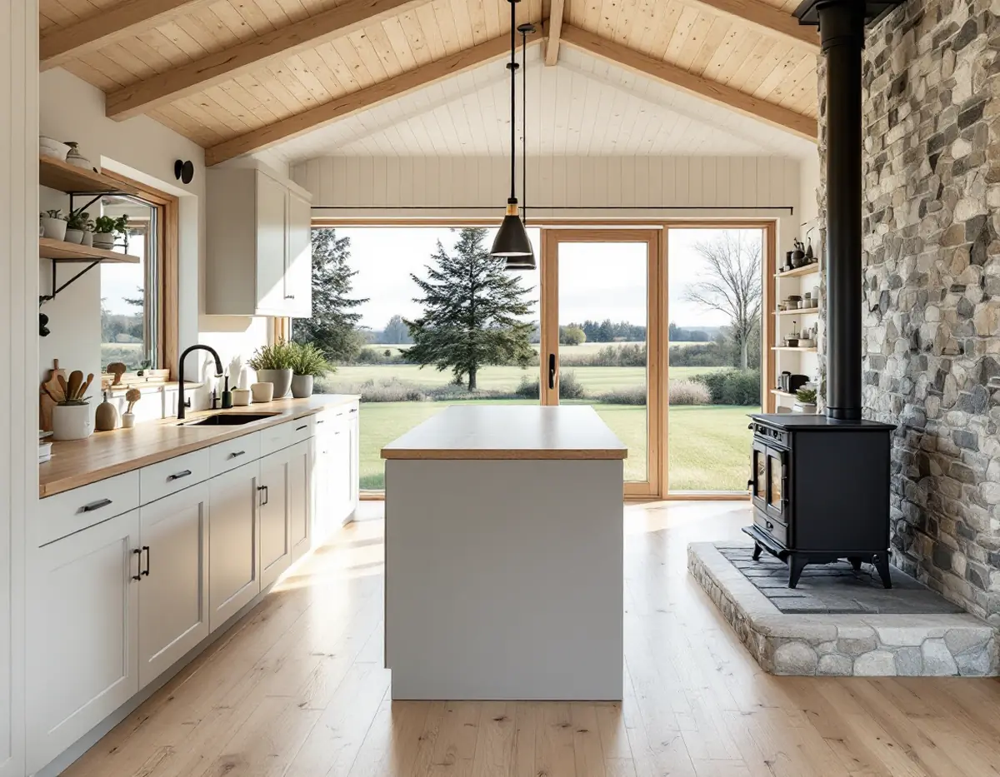
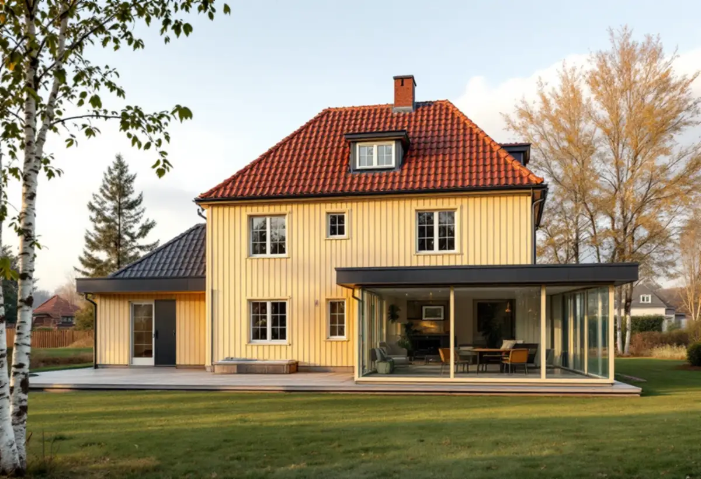

Platsbesök
Vi mäter köket, tomten och avstånden och ser vad som redan byggts lovfritt.
I Vallentuna är det ofta tomten som ger utrymme, inte huset. Ett större kök blir då en tillbyggnad, och sedan den 1 december 2025 gäller nya regler för vad som går att bygga utan lov. Geal Entreprenad AB gör om och bygger ut kök i Vallentuna, med gratis platsbesök, skriftligt kostnadsförslag och ROT-avdraget direkt på fakturan.

Vallentuna kommun beskriver på sidan om tillbyggnad av en- och tvåbostadshus vad som gäller efter lagändringen. En tillbyggnad får vara högst 30 kvadratmeter i brutto- eller öppenarea, och då räknas alla tidigare och nya lovfria tillbyggnader på huset ihop. Den får inte vara högre än husets taknock och ska ligga minst 4,5 meter från tomtgränsen mot granne, samfällighet eller gata. Vill du bygga närmare krävs skriftligt medgivande från de berörda.
Ligger fastigheten i ett kulturhistoriskt särskilt värdefullt område krävs bygglov oavsett storlek. Kommunen påpekar också att tillbyggnaden kan kräva anmälan och startbesked trots att den är lovfri, till exempel om vatten och avlopp eller ventilation installeras i den. För ett kök blir det aktuellt så snart diskbänken eller fläkten flyttar ut i den nya delen.
Har huset redan en tidigare attefallstillbyggnad eller ett skärmtak räknas de in i de 30 kvadratmetrarna. Vi mäter därför upp det som redan finns innan vi föreslår hur stor köksdelen kan bli.

Boverkets lista över PBL-ändringarna visar att friggebod och attefallshus har ersatts av bygglovsbefriad komplementbyggnad och komplementbostadshus. Ett komplementbostadshus kräver bygglov om det är större än 30 kvadratmeter inom detaljplan eller 50 kvadratmeter utanför, och varje tomt har en gemensam pott på 45 respektive 65 kvadratmeter för sådana byggnader.
Boverket skriver också att många åtgärder som tidigare krävde anmälan, till exempel attefallshus, inte längre kräver anmälan för själva byggnaden. Men eftersom vatten, avlopp och ventilation fortfarande är anmälningspliktiga krävs en anmälan för installationerna. Ett kök i ett gästhus på tomten behöver alltså anmälas även när huset i sig är lovfritt.
Enligt kommunens översiktsplan 2040 började en ny tid 1885 när Roslagsbanan invigdes mellan Stockholm och Rimbo. Stationerna blev mötesplatser och stationssamhällen växte fram med villabebyggelse, och i dag har banan fem stationer i kommunen.
För den som bor nära spåret finns en särskild regel. Boverket skriver att bygglov krävs för en annars lovfri tillbyggnad om den görs närmare än 30 meter från ett järnvägsspårs mitt. Undantag finns om infrastrukturförvaltaren skriftligen har medgett åtgärden. En köksutbyggnad på baksidan av en villa vid en station kan alltså behöva bygglov även om den är liten.
Vi mäter avståndet tidigt, så att du vet om det blir en lovansökan innan ritningarna görs klara. Ska huset samtidigt få ny fasad där köket byggs till, se fasadrenovering i Vallentuna.
I ett hus på landet vill många ha en vedspis eller en braskamin i köket. Vallentuna kommun skriver att det krävs en anmälan när en eldstad installeras, och att det gäller även vid byte till en annan typ av eldstad eller från öppen spis till spisinsats. Installationen får inte börja förrän kommunen gett startbesked.
Innan eldstaden används ska du ha ett slutbesked. Det får du när en ifylld kontrollplan och ett sotarintyg utan anmärkningar har lämnats in till kommunen. Bygglov krävs om en ny skorsten ska sitta på fasaden eller om en befintlig utanpåliggande skorsten ska ändras.
Bland de anmälningspliktiga åtgärderna räknar kommunen också ändringar som väsentligt påverkar bärande delar eller brandskydd, och nya eller ändrade installationer för ventilation, vatten och avlopp. Planerar du både vedspis och köksfläkt tar vi med båda i samma anmälan.
Vi mäter köket, tomten och avstånden och ser vad som redan byggts lovfritt.
Vi bedömer om tillbyggnaden kräver lov och vilka installationer som ska anmälas.
Tillbyggnad, kök och eventuell eldstad redovisas var för sig.
Arbetet med installationerna börjar när kommunen har gett startbesked.
Tillbyggnaden byggs, rör, el och fläkt dras och köket monteras.
Kontrollplan och sotarintyg lämnas in där det krävs och vi går igenom köket med dig.
Rotavdrag gäller arbete i en bostad du äger och bor i, även en fritidsbostad. Montering av köksinredning och vitvaror i samband med omfattande byggarbete, liksom ny el och nya avlopp, räknas som rotarbete. Avdraget är 30 procent av arbetskostnaden, högst 50 000 kr per person och år.
Materialet ger inget avdrag. Vi skriver arbete och material var för sig och drar avdraget direkt på fakturan.
Om köket stannar i huset eller byggs ut, hur grundläggningen för en tillbyggnad ska göras, om vatten och avlopp ska förlängas och om en eldstad med skorsten ingår. Efter ett gratis platsbesök får du ett skriftligt kostnadsförslag.
Planering, el, VVS, fläkt och väggar.
Köksrenovering i Stockholm →Takbyte, takbesiktning och plåtarbeten.
Takläggare i Vallentuna →Villaområden och gårdar.
Takrenovering i Vallentuna →Nytt våtrum, Roslagsvatten och egen brunn.
Badrumsrenovering i Vallentuna →Fritidshus, stationssamhällen och villor i Vallentuna.
Fasadrenovering i Vallentuna →Flygbuller, glasval och lov i Vallentuna.
Fönsterbyte i Vallentuna →Golv på platta och golvvärme i villan.
Golvläggare i Vallentuna →Gårdar, fritidshus och villor i Vallentuna.
Målare i Vallentuna →Uthus, uterum och fritidshus.
Snickare i Vallentuna →